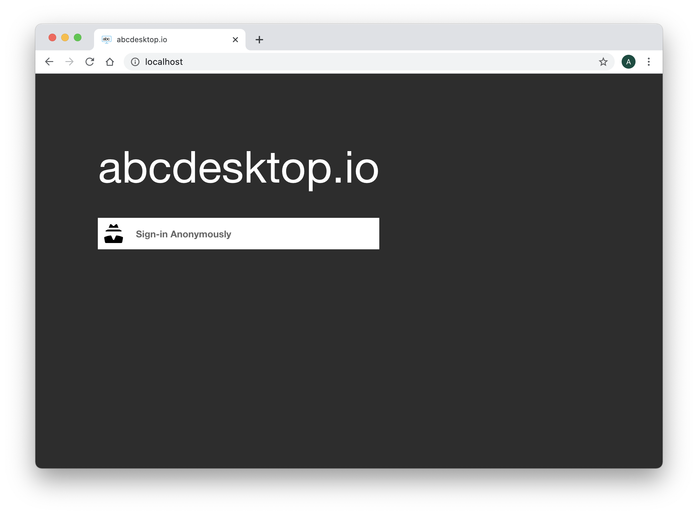
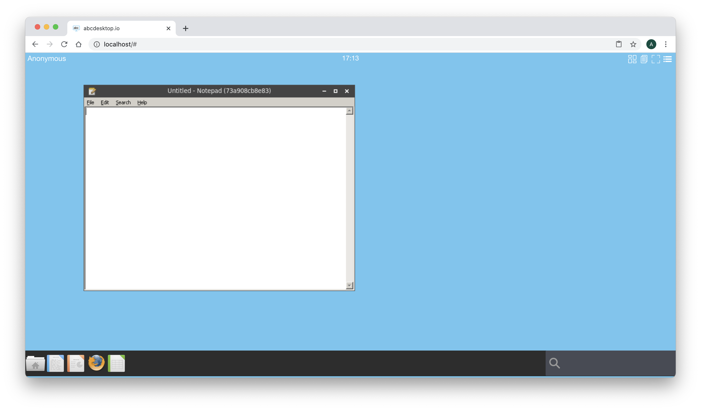

Run docker image for Windows using Wine
Requirements
- Read the previous chapter Build abcdesktop docker image
- Read the Chapter Authentification explicit for LDAP Directory Services is recommended but not mandatory.
WineHQ
Wine (originally an acronym for "Wine Is Not an Emulator") is a compatibility layer capable of running Windows applications on several POSIX-compliant operating systems, such as Linux, macOS, & BSD. Instead of simulating internal Windows logic like a virtual machine or emulator, Wine translates Windows API calls into POSIX calls on-the-fly, eliminating the performance and memory penalties of other methods and allowing you to cleanly integrate Windows applications into your desktop.
To run Windows applications abcdesktop.io use WineHQ. A dedicated image template source is ready to use as source of others Windows applications. This image template is named abcdesktopio/oc.template.gtk.wine.50
Start pulling this template image :
docker pull abcdesktopio/oc.template.gtk.wine
Look at the Dockerfile to build the abcdesktopio/oc.template.gtk.wine on the https://hub.docker.com/ web site.
For a better support, we are using the 32 bits library, as i386 libs on GNU/Linux. Your can read in the Dockerfile, how the abcdesktopio/oc.template.gtk.wine is created.
Dockerfile information :
dpkg --add-architecture i386aptitude install -y wine
Run notepad.exe for Windows in a Docker container
In this chapter we are going to run
notepad.exefor Windows inside a docker container for abcdesktop.io.
Start an abcdesktop session. You can use an authenticated session using an authentication provider external or explicit, or you can do this exercice using Anonymous Authentification also know as the authentication provider implicit.
In this chapter we choose an Anonymous, DO NOT CLOSE YOUR WEB BROWSER, you should not be able de reconnect with the same user context, and have to restart this exercice at the begining, else you can choose to configure abcdesktop with ldap authentification.

Login using the Anonymous authentification provider.

Keep your web browser open, then on your host, open a terminal shell window and run the command
docker ps --filter ancestor=abcdesktopio/oc.user.18.04
The option --filter ancestor=abcdesktopio/oc.user.18.04 ask to filter only container with the image ancestor set with value abcdesktopio/oc.user.18.04
You should read the container with the image named abcdesktopio/oc.user.18.04
docker ps --filter ancestor=abcdesktopio/oc.user.18.04
CONTAINER ID IMAGE COMMAND CREATED STATUS PORTS NAMES
86df3ff126ac abcdesktopio/oc.user.18.04 "/composer/docker-en" 3 minutes ago Up 3 minutes 4714/tcp, 6081/tcp, 29780-29781/tcp, 29783-29784/tcp, 29786/tcp g-5f4300d2-7c8e-43c6-89ab-f85bd8b68138
Read the values CONTAINER ID and NAMES
In this example, the CONTAINER ID is 86df3ff126ac and the NAME is g-5f4300d2-7c8e-43c6-89ab-f85bd8b68138.
We are using the /tmp volume of this CONTAINER ID 86df3ff126ac
Using an anonymous authnetification, the name of your container id is an UUID, for example 57be1e5b-0b14-4c05-ae79-75e9a03c77be. The name of the tmp volume is tmp-57be1e5b-0b14-4c05-ae79-75e9a03c77be
Run a docker inspect -f "{{ .HostConfig.Binds }}" and add your CONTAINER ID as parameter.
docker inspect -f "{{ .HostConfig.Binds }}" CONTAINER_ID
For example
docker inspect -f "{{ .HostConfig.Binds }}" 86df3ff126ac
You should read the volume name starting by tmp- with your uuid concatened
[tmp-5f4300d2-7c8e-43c6-89ab-f85bd8b68138:/tmp home-5f4300d2-7c8e-43c6-89ab-f85bd8b68138:/home/balloon]
Note: if your are using an LDAP authentification, the name of your container id is the username, for example
hermes. The name of thetmpvolume istmp-hermes
Now, start a new docker container with the same HostConfig.Bings as your oc.user container. The -v parameter is the first entry of the result in the previous command docker inspect -f "{{ .HostConfig.Binds }}"
docker run -it -v TMP_VOLUMENAME:/tmp --user balloon abcdesktopio/oc.template.gtk.wine bash
For example with an Anonymous user:
docker run -it -v tmp-5f4300d2-7c8e-43c6-89ab-f85bd8b68138:/tmp --user balloon abcdesktopio/oc.template.gtk.wine bash
Great, you have started a new docker container. The oc.user containter and your new container are sharing the same volume mounted as /tmp. You get a prompt inside the new docker container.
To run a command as administrator (user "root"), use "sudo <command>".
See "man sudo_root" for details.
balloon@8684ae888f74:~$
And now start the notepad.exe with wine
balloon@8684ae888f74:/$ wine notepad
After few seconds you should read on the standard error
balloon@8684ae888f74:/$ wine notepad
0015:err:clipboard:convert_selection Timed out waiting for SelectionNotify event
0014:err:ole:marshal_object couldn't get IPSFactory buffer for interface {00000131-0000-0000-c000-000000000046}
0014:err:ole:marshal_object couldn't get IPSFactory buffer for interface {6d5140c1-7436-11ce-8034-00aa006009fa}
0014:err:ole:StdMarshalImpl_MarshalInterface Failed to create ifstub, hres=0x80004002
0014:err:ole:CoMarshalInterface Failed to marshal the interface {6d5140c1-7436-11ce-8034-00aa006009fa}, 80004002
0014:err:ole:get_local_server_stream Failed: 80004002
0012:err:ole:marshal_object couldn't get IPSFactory buffer for interface {00000131-0000-0000-c000-000000000046}
0012:err:ole:marshal_object couldn't get IPSFactory buffer for interface {6d5140c1-7436-11ce-8034-00aa006009fa}
0012:err:ole:StdMarshalImpl_MarshalInterface Failed to create ifstub, hres=0x80004002
0012:err:ole:CoMarshalInterface Failed to marshal the interface {6d5140c1-7436-11ce-8034-00aa006009fa}, 80004002
0012:err:ole:get_local_server_stream Failed: 80004002
Could not find Wine Gecko. HTML rendering will be disabled.
wine: configuration in L"/composer/.wine" has been updated.
And the notepad window should be open inside your Web browser

This Windows application is running inside a docker container on abcdesktop.io desktop.
In the Terminal shell press CTRL+C to stop the wine notepad process, then type exit to quit your shell in container.
^C0032:fixme:console:CONSOLE_DefaultHandler Terminating process 8 on event 0
balloon@4c4d806557dc:~$ exit
exit
It's time to build your own abcdesktop application image. Read the next chapter Build abcdesktop.io docker image for Windows using Wine.